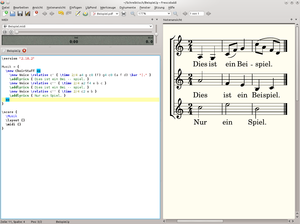
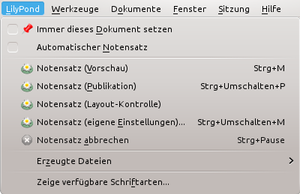
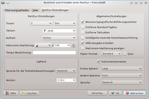

Frescobaldi
Dieser Artikel wurde für die folgenden Ubuntu-Versionen getestet:
Ubuntu 16.04 Xenial Xerus
Ubuntu 14.04 Trusty Tahr
Zum Verständnis dieses Artikels sind folgende Seiten hilfreich:
Frescobaldi  ist ein freier, leistungsfähiger Texteditor für das Notensatzprogramm LilyPond, der neben dem Notensatz eine Vielzahl von Funktionen bietet: Syntaxhervorhebung und automatische Vervollständigung von Eingaben, komfortable Anzeige der PDF-Ausgabedatei, direkte Wiedergabe der Midi-Ausgabedatei, eine Schnittstelle zur Aufzeichnung von Midi-Daten, einfache Verwaltung von Codeschnipseln u.v.m.
ist ein freier, leistungsfähiger Texteditor für das Notensatzprogramm LilyPond, der neben dem Notensatz eine Vielzahl von Funktionen bietet: Syntaxhervorhebung und automatische Vervollständigung von Eingaben, komfortable Anzeige der PDF-Ausgabedatei, direkte Wiedergabe der Midi-Ausgabedatei, eine Schnittstelle zur Aufzeichnung von Midi-Daten, einfache Verwaltung von Codeschnipseln u.v.m.
Es wurde nach Girolamo Frescobaldi (1583–1643) benannt, einem italienischen Komponisten der späten Renaissance und des Früh-Barocks. Frescobaldi steht unter der GNU GPL und wird mit Python entwickelt.
Installation¶
Frescobaldi ist in den offiziellen Paketquellen vorhanden. Installiert werden muss das folgende Paket [1]:
frescobaldi (universe)
 mit apturl
mit apturl
Paketliste zum Kopieren:
sudo apt-get install frescobaldi
sudo aptitude install frescobaldi
In Ubuntu 14.04 die Version 2.0.13 vor, in Ubuntu 16.04 die Version 2.18.1. Da Frescobaldi laufend weiterentwickelt und verbessert wird, ist es unter Umständen empfehlenswert, sich die aktuelle Version manuell zu installieren.
Hinweis:
Die Paketquellenversion von Ubuntu 14.04 hat einen Bug, der in Kubuntu 14.04 zu schweren Beeinträchtigungen führen kann (siehe Problembehebung). Ab der Version 2.17 ist dieser Fehler behoben.
Installieren aus dem Github-Projekt¶
Die jeweils aktuellste stabile Version von Frescobaldi findet man auf
GitHub  . Zur Installation lädt man sich dort das .tar.gz-Archiv der gewünschten Version herunter und entpackt [2] es in einen beliebigen Programmordner, z. B. nach ~/frescobaldi/ ins Homeverzeichnis.
. Zur Installation lädt man sich dort das .tar.gz-Archiv der gewünschten Version herunter und entpackt [2] es in einen beliebigen Programmordner, z. B. nach ~/frescobaldi/ ins Homeverzeichnis.
Als nächstes stellt man sicher, dass die Abhängigkeiten erfüllt sind [3][4]:
sudo apt-get update; sudo apt-get install python python-qt4 python-poppler-qt4 python-pypm lilypond
Sind alle benötigten Pakete installiert, lässt sich das Programm mit folgendem Befehl starten [5]:
python /PFAD/ZU/frescobaldi
Hinweis:
Diese Variante ist insbesondere dann zu empfehlen, wenn man die Frescobaldi-Version aus den offiziellen Paketquellen behalten möchte. Andernfalls kann man (falls installiert) das Paket frescobaldi entfernen [1] und anschließend im Programmordner das beigefügte Setup-Skript des Programms ausführen:
sudo python setup.py install
Danach lässt sich Frescobaldi mit dem Befehl frescobaldi starten.
Benutzung¶

Überblick¶
Da Frescobaldi im Grunde ein Texteditor ist, besteht das Programmfenster immer mindestens aus der Codeansicht. Darin können, organisiert durch Reiter (Tabs), eine oder mehrere Dateien nebeneinander geöffnet und ihr Inhalt angezeigt werden. Zwei nützliche Werkzeuge, die man im Menü „Werkzeuge“ zu- und abschalten kann, sind:
die Notenansicht, in der die PDF-Ausgabe von LilyPond angezeigt wird
der MIDI-Player, mit dem man sich die von LilyPond ausgegebene MIDI-Datei anhören kann
Diese beiden und die zahlreichen anderen Werkzeuge lassen sich mit der Maus frei zueinander und zur Codeansicht positionieren und durch das Rautensymbol ◇ in der jeweiligen Titelleiste als eigene Fenster öffnen.
Die Symbolleiste enthält neben den üblichen Schaltflächen zum Neuerstellen, Öffnen und Speichern von Dateien Befehle zum Starten des Partiturassistenten und zum Ausführen des Lilypond-Notensatzes. Die in der Voreinstellung rechts anschließende Musikansichtsleiste erlaubt die Steuerung der PDF-Notenansicht: Hier lässt sich die anzuzeigende PDF-Datei auswählen, die Vergrößerungsstufe einstellen, durch die Seiten der Ausgabe zu blättern und die Notenausgabe zu drucken. Auch diese beiden Leisten lassen sich frei positionieren und über ihr Kontextmenü schließen.
Einstellungen¶
Über das Menü „Bearbeiten → Einstellungen“ erreicht man die Konfiguration, in der neben allgemeinen Einstellungen wie der Sprache und dem Stil von Frescobaldi unter anderem auch Einstellungen zu LilyPond, verwendeten Hilfsprogrammen, Kurzbefehlen und Werkzeugen tätigen kann. So ist es möglich, über die „LilyPond-Einstellungen“ außer der automatisch eingestellten LilyPond-Version, die normalerweise derjenigen aus den Paketquellen entspricht, eine zweite hinzuzufügen und mit der Schaltfläche „Als Standardeinstellung setzen“ als die zu benutzende Version zu markieren. Das ist insbesondere dann sinnvoll, wenn man eine neuere LilyPond-Version als die der offiziellen Paketquellen zum Notensatz verwenden will.
Eine weitere, recht nützliche Einstellung versteckt sich unter „Werkzeuge“: In der Voreinstellung öffnet sich beim Setzen der Noten stets das LilyPond-Protokoll. Dies kann man deaktivieren, indem man hier die Option "Zeige das Protokoll, wenn ein Vorgang gestartet wurde" entfernt.
Notensatz¶
Für den LilyPond-Notensatz bietet Frescobaldi außer der zu verwendenden LilyPond-Version weitere Einstellungen, die übers Menü „LilyPond“ erreichbar sind:
„immer dieses Dokument setzen“ – bis zur Deaktivierung wird nur das zum Zeitpunkt der Auswahl geöffnete Dokument gesetzt
„Automatischer Notensatz“ – der Notensatz startet automatisch, sobald das Dokument verändert wird
 Darunter findet man verschiedene Varianten des Notensatzes:
die Vorschaufunktion ( Strg + M ), die auch über die LilyPond-Schaltfläche in der Symbolleiste ausgelöst werden kann, nutzt die Option
-dpoint-and-clickvon LilyPond. Fährt man in der Notenansicht einer damit erstellten PDF mit der Maus über eine Note, ein Wort, ein Artikulationszeichen etc., wird der entsprechende Befehl in der Codeansicht hervorgehoben. Diese Funktion ist sehr nützlich, um Korrekturen und Änderungen schnell vornehmen zu können.die Publikationsfunktion ( Strg + ⇧ + P ), die auf diese Funktion verzichtet und dadurch schneller eine PDF-Ausgabe mit deutlich geringerer Dateigröße erzeugt
die Layoutkontrollfunktion, die (über das Werkzeug „Layoutkontrolloptionen“) erweiterte Optionen bietet
die Möglichkeit einer eigenen Notensatzeinstellung ( Strg + ⇧ + M ), wo auch Kommandozeilenoptionen für LilyPond direkt eingegeben werden können
Werkzeuge¶
Außer den genannten bietet Frescobaldi eine Fülle weiterer Werkzeuge, die den Umgang mit LilyPond sehr vereinfachen. Alle Werkzeugfenster können über das Menü „Werkzeuge“ sowie über Tastenkombinationen geöffnet und geschlossen werden. Einige dieser Werkzeuge sind:
Schnell einfügen – Einfügen der Befehle für musikalische Zeichen auf Knopfdruck
SVG-Ansicht – wie „Notenansicht“, jedoch für die SVG-Ausgabe von LilyPond (das Standardausgabeformat ist in den Einstellungen unter „LilyPond-Einstellungen“ wählbar, SVG kann aber auch durch eine benutzerdefinierte Notensatzeinstellung ausgegeben werden)
LilyPond-Protokoll – zeigt die von LilyPond beim Notensatz ausgegebenen Meldungen an (das Protokoll öffnet sich in der Voreinstellung beim manuellen Notensatz automatisch, dieses Verhalten kann in den Einstellungen unter „Werkzeuge“ verändert werden)
Dokumentation-Browser – zeigt die LilyPond-Dokumentation an
Schnipsel – stellt mannigfaltige Codeschnipsel und Funktionen zur Modifikation markierten Texts zur Verfügung, außerdem lassen sich eigene Schnipsel erstellen und mit Tastenkombinationen versehen
Dokumente – Liste der geöffneten Dokumente, eine mögliche Alternative zur Reiterleiste
Dokumentstruktur – Übersicht über die Struktur des geöffneten Dokuments, nützlich vor allem bei komplexeren Dateien zur Orientierung und zum schnellen Sprung an eine bestimmte Stelle
Erstellen von LilyPond-Dateien¶
Zum einfachen Erstellen neuer LilyPond-Dateien stellt Frescobaldi nützliche Hilfen zur Verfügung. Im Menü „Einfügen“ findet man in knapper Form die typischen Bestandteile einer LilyPond-Datei: Hier lassen sich mit wenigen Klicks die verwendete LilyPond-Version, eine Header-Vorlage für Titel, Komponist und (englischer) Fußnote sowie der score-Block einfügen. Auch oft genutzte Codeschnipsel wie der Befehl für eine Triole und die Wiederholung der vorangegangenen Note finden sich in diesem Menü. Andere Hilfen sind leider noch nicht ausreichend lokalisiert, so entsprechen die typographischen Anführungszeichen auch in der deutschen Version von Frescobaldi dem anglophonen (“”) statt dem deutschen Standard („“).

Der Partiturassistent¶
Ein mächtiges Werkzeug zum Erstellen des Gerüsts neuer LilyPond-Dateien ist der Partiturassistent, der über die Schaltfläche mit dem Zauberstab oder via „Datei → Partitur-Assistent“ gestartet werden kann. Im ersten Reiter „Titel und Kopfzeilen“ kann man alle Informationen zur Partitur eingeben, die dann über und unter den Noten auf der Seite positioniert werden. Der zweite Reiter dient zur Auswahl aller Teile der Partitur, also aller beteiligten Instrumente, Chorstimmen etc. Für zahlreiche Instrumente lassen sich im rechten Teil erweiterte Einstellungen treffen, um das Partiturengerüst ganz auf die eigenen Belange zuzuschneiden. Im letzten Reiter „Partitur-Einstellungen“ lassen sich allgemeine Einstellungen wie Ton- und Taktart treffen, aber auch das Papierformat bestimmen und die Darstellung von Instrumentenbezeichnungen vor den Notenzeilen regeln.
Export und Druck¶
Von Haus aus erstellt LilyPond je nach Einstellung eine PDF- oder SVG-Datei mit den gesetzten Noten, die beim Starten des Notensatzes im selben Ordner wie die .ly-Datei mit demselben Dateinamen gespeichert wird. Mit dem Befehl midi {} im score-Kontext gibt LilyPond die Musik außerdem als MIDI-Datei aus und speichert sie ebenso wie die grafische Ausgabe. Frescobaldi bietet via „Datei → Exportieren → Audio exportieren…“ eine Konvertierungsfunktion dieser MIDI-Datei ins WAV-Format. Außerdem kann man im selben Menü den Codetext als farbiges HTML mit derselben Gestaltung wie in der Codeansicht speichern.
Ebenfalls im Datei-Menü findet man die Druckfunktionen von Frescobaldi: Der Codetext lässt sich analog zur HTML-Exportfunktion mit der farbigen Syntaxhervorhebung drucken oder mit einem PDF-Drucker als PDF speichern. Die PDF-/SVG-Notenausgabe kann mit „Noten drucken…“ gedruckt werden.
Tipps und Tricks¶
mit gehaltenem Strg +
 lässt sich in der Notenansicht eine hilfreiche Lupe aktivieren
lässt sich in der Notenansicht eine hilfreiche Lupe aktivierendas Ansichtmenü verfügt über zahlreiche Optionen zur Anpassung der Codeansicht, zum Beispiel automatische Zeilenumbrüche und Code-Folding
unter „Werkzeuge → Tonhöhen“ findet sich eine nützliche Funktion zum Transponieren markierter Noten, die eine Alternative zur Verwendung des
transpose-Befehls von LilyPond bietetunter „Werkzeuge → Rhythmus“ kann man mit „Implizit machen“ die angegebenen Notenlängen markierter Noten auf das Notwendigste beschränken bzw. mit „Explizit machen“ jede Note mit ihrer Länge als Zahl ausstatten
Problembehebung¶
Sprache der Oberfläche¶
Die Version aus den offiziellen Paketquellen von Ubuntu 14.04 und neuere Versionen stehen in zahlreichen Sprachen zur Verfügung. In der Standardeinstellung wird die Systemsprache genutzt, manuell einstellen lässt sich die Sprache in den Einstellungen („Bearbeiten → Einstellungen → Allgemeine Einstellungen“).
Probleme in Kubuntu 14.04¶
In Kubuntu 14.04 kann es mit der Paketquellenversion von Frescobaldi zu massiven Problemen wie dem Einfrieren der Oberfläche beim Programmstart kommen. Abhilfe schafft hier die Installation der aktuellen Version (2.17 oder höher) aus dem Github-Projekt wie oben beschrieben.
Keine MIDI-Ausgabe¶
Häufiger Fehler ist, dass LilyPond keine Anweisung erhalten hat, überhaupt eine MIDI-Datei auszugeben. Damit das geschieht, muss im score-Kontext der Befehl midi {} stehen. Ob eine Datei erstellt wurde, erkennt man im MIDI-Player: Dort sollte Dateiname.midi zu lesen sein.
Für die Wiedergabe benötigt man einen MIDI-Synthesizer wie z. B. TiMidity. Mit dem Befehl:
timidity -iA
lässt sich TiMidity als Server starten, sodass es Ports bereitstellt, die von Frescobaldi zur Ausgabe genutzt werden können. Die automatische Suche eines passenden Ports wird im Einstellungsfenster bei „MIDI-Einstellungen“ mit der Schaltfläche „MIDI-Ports aktualisieren“ gestartet.
Alternativen¶
Einige Programme können neben den eigenen Formaten auch Lilypond-Dateien erstellen, so z. B. nted, MuseScore, Canorus, Rosegarden oder Denemo. Keines davon beherrscht aber die komplette LilyPond-Syntax. Insofern ist Frescobaldi konkurrenzlos, wenn man nicht direkt mit Texteditoren LilyPond-/LaTex-Dateien erstellen möchte. Es kann zudem als Ergänzung für andere Programme dann verwendet werden, wenn bestimmte Funktionen zum Satz fehlen.
Links¶
Frescobaldi - Wikipediaartikel
Lilypond - verwendete Notensatzsoftware
Noten und Akkorde
 - Übersicht unter Multimedia
- Übersicht unter Multimedia
- Erstellt mit Inyoka
-
 2004 – 2017 ubuntuusers.de • Einige Rechte vorbehalten
2004 – 2017 ubuntuusers.de • Einige Rechte vorbehalten
Lizenz • Kontakt • Datenschutz • Impressum • Serverstatus -
Serverhousing gespendet von